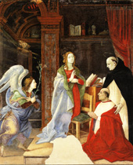

|  |
|---|
[86708] Super Ave Maria, pr. In salutatione ista continentur tria. Unam partem fecit Angelus, scilicet ave gratia plena, dominus tecum, benedicta tu in mulieribus. Aliam partem fecit Elisabeth, mater Ioannis Baptistae, scilicet benedictus fructus ventris tui. Tertiam partem addidit Ecclesia, scilicet Maria: nam Angelus non dixit, ave Maria, sed ave, gratia plena. Et hoc nomen, scilicet Maria, secundum suam interpretationem convenit dictis Angeli, sicut patebit.
[86710] Super Ave Maria, a. 1 Est ergo circa primum considerandum, quod antiquitus erat valde magnum quod Angeli apparerent hominibus; vel quod homines facerent eis reverentiam, habebant pro maxima laude. Unde et ad laudem Abrahae scribitur, quod recepit Angelos hospitio, et quod exhibuit eis reverentiam. Quod autem Angelus faceret homini reverentiam, nunquam fuit auditum, nisi postquam salutavit beatam virginem, reverenter dicens, ave. Quod autem antiquitus non reverebatur hominem Angelus, sed homo Angelum, ratio est, quia Angelus erat maior homine; et hoc quantum ad tria. Primo quantum ad dignitatem: ratio est, Angelus est naturae spiritualis. Psal. CIII, 4: qui facit Angelos suos spiritus; homo vero est naturae corruptibilis: unde dicebat Abraham (Gen. XVIII, 27): loquar ad dominum meum, cum sim pulvis et cinis. Non ergo erat decens ut spiritualis et incorruptibilis creatura reverentiam exhiberet corruptibili, scilicet homini. Secundo quantum ad familiaritatem ad Deum. Nam Angelus est Deo familiaris, utpote assistens. Dan. VII, 10: millia millium ministrabant ei, et decies millies centena millia assistebant ei. Homo vero est quasi extraneus, et elongatus a Deo per peccatum. Psal. LIV, 8: elongavi fugiens. Ideo conveniens est ut homo revereatur Angelum, utpote propinquum et familiarem regis. Tertio praeeminebat propter plenitudinem splendoris gratiae divinae: Angeli enim participant ipsum lumen divinum in summa plenitudine. Iob. XXV, 3: nunquid est numerus militum eius, et super quem non surget lumen eius? Et ideo semper apparet cum lumine. Sed homines, etsi aliquid participent de ipso lumine gratiae, parum tamen, et in obscuritate quadam. Non ergo decens erat ut homini reverentiam exhiberet, quousque aliquis inveniretur in humana natura qui in his tribus excederet Angelos. Et haec fuit beata virgo. Et ideo ad designandum quod in his tribus excedebat eum, voluit ei Angelus reverentiam exhibere: unde dixit, ave. Unde beata virgo excessit Angelos in iis tribus. Et primo in plenitudine gratiae, quae magis est in beata virgine quam in aliquo Angelo; et ideo ad insinuandum hoc, Angelus ei reverentiam exhibuit, dicens, gratia plena, quasi diceret: ideo exhibeo tibi reverentiam, quia me excellis in plenitudine gratiae. Dicitur autem beata virgo plena gratia quantum ad tria. Primo quantum ad animam, in qua habuit omnem plenitudinem gratiae. Nam gratia Dei datur ad duo: scilicet ad bonum operandum, et ad vitandum malum; et quantum ad ista duo perfectissimam gratiam habuit beata virgo. Nam ipsa omne peccatum vitavit magis quam aliquis sanctus post Christum. Peccatum enim aut est originale, et de isto fuit mundata in utero; aut mortale aut veniale, et de istis libera fuit. Unde Cant. IV, 7: tota pulchra es, amica mea, et macula non est in te. Augustinus in libro de natura et gratia: excepta sancta virgine Maria, si omnes sancti et sanctae cum hic viverent, interrogati fuissent utrum sine peccato essent, omnes una voce clamassent: si dixerimus quia peccatum non habemus, ipsi nos seducimus, et veritas in nobis non est. Excepta, inquam, hac sancta virgine, de qua propter honorem domini, cum de peccato agitur, nullam prorsus volo quaestionem habere. Scimus enim quod ei plus gratiae collatum fuerit ad peccatum ex omni parte vincendum quae illum concipere et parere meruit quem constat nullum habuisse peccatum. Sed Christus excellit beatam virginem in hoc quod sine originali conceptus et natus est. Beata autem virgo in originali est concepta, sed non nata. Ipsa etiam omnium virtutum opera exercuit, alii autem sancti specialia quaedam: quia alius humilis, alius castus, alius misericors; et ideo ipsi dantur in exemplum specialium virtutum, sicut beatus Nicolaus in exemplum misericordiae et cetera. Sed beata virgo in exemplum omnium virtutum: quia in ea reperis exemplum humilitatis: Luc. I, 38: ecce ancilla domini, et post, vers. 48: respexit humilitatem ancillae suae, castitatis, quoniam virum non cognosco, vers. 34, et omnium virtutum; ut satis patet. Sic ergo plena est gratia beata virgo et quantum ad boni operationem, et quantum ad mali vitationem. Secundo plena fuit gratia quantum ad redundantiam animae ad carnem vel corpus. Nam magnum est in sanctis habere tantum de gratia quod sanctificet animam; sed anima beatae virginis ita fuit plena quod ex ea refudit gratiam in carnem, ut de ipsa conciperet filium Dei. Et ideo dicit Hugo de s. Victore: quia in corde eius amor spiritus sancti singulariter ardebat, ideo in carne eius mirabilia faciebat, intantum quod de ea nasceretur Deus et homo. Luc. I, 35: quod enim nascetur ex te sanctum, vocabitur filius Dei. Tertio quantum ad refusionem in omnes homines. Magnum enim est in quolibet sancto, quando habet tantum de gratia quod sufficit ad salutem multorum; sed quando haberet tantum quod sufficeret ad salutem omnium hominum de mundo, hoc esset maximum: et hoc est in Christo, et in beata virgine. Nam in omni periculo potes salutem obtinere ab ipsa virgine gloriosa. Unde Cant. IV, 4: mille clypei, (idest remedia contra pericula), pendent ex ea. Item in omni opere virtutis potes eam habere in adiutorium; et ideo dicit ipsa, Eccli. XXIV, 25: in me omnis spes vitae et virtutis. Sic ergo plena est gratia, et excedit Angelos in plenitudine gratiae; et propter hoc convenienter vocatur Maria quae interpretatur illuminata in se; unde Isai. LVIII, 11: implebit splendoribus animam tuam; et illuminatrix in alios, quantum ad totum mundum; et ideo assimilatur soli et lunae. Secundo excellit Angelos in familiaritate divina. Et ideo hoc designans Angelus dixit: dominus tecum; quasi dicat: ideo exhibeo tibi reverentiam, quia tu familiarior es Deo quam ego, nam dominus est tecum. Dominus, inquit, pater cum eodem filio; quod nullus Angelus, nec aliqua creatura habuit. Luc. I, XXXV: quod enim nascetur ex te sanctum, vocabitur filius Dei. Dominus filius in utero. Isai. XII, 6: exulta et lauda habitatio Sion, quia magnus in medio tui sanctus Israel. Aliter est ergo dominus cum beata virgine quam cum Angelo; quia cum ea ut filius, cum Angelo ut dominus. Dominus spiritus sanctus, sicut in templo; unde dicitur: templum domini, sacrarium spiritus sancti, quia concepit ex spiritu sancto: Luc. I, 35: spiritus sanctus superveniet in te. Sic ergo familiarior cum Deo est beata virgo quam Angelus: quia cum ipsa dominus pater, dominus filius, dominus spiritus sanctus, scilicet tota Trinitas. Et ideo cantatur de ea: totius Trinitatis nobile triclinium. Hoc autem verbum, dominus tecum, est nobilius verbum quod sibi dici possit. Merito ergo Angelus reveretur beatam virginem, quia mater domini, et ideo domina est. Unde convenit ei hoc nomen Maria, quod Syra lingua interpretatur domina. Tertio excedit Angelos quantum ad puritatem: quia beata virgo non solum erat pura in se, sed etiam procuravit puritatem aliis. Ipsa enim purissima fuit et quantum ad culpam, quia ipsa virgo nec mortale nec veniale peccatum incurrit. Item quantum ad poenam. Tres enim maledictiones datae sunt hominibus propter peccatum. Prima data est mulieri, scilicet quod cum corruptione conciperet, cum gravamine portaret, et in dolore pareret. Sed ab hac immunis fuit beata virgo: quia sine corruptione concepit, in solatio portavit, et in gaudio peperit salvatorem. Isai. XXXV, 2: germinans germinabit exultabunda et laudans. Secunda data est homini, scilicet quod in sudore vultus vesceretur pane suo. Ab hac immunis fuit beata virgo: quia, ut dicit apostolus, I Cor. VII, virgines solutae sunt a cura huius mundi, et soli Deo vacant. Tertia fuit communis viris et mulieribus, scilicet ut in pulverem reverterentur. Et ab hac immunis fuit beata virgo, quia cum corpore assumpta est in caelum. Credimus enim quod post mortem resuscitata fuerit, et portata in caelum. Psal. CXXXI, 8: surge, domine, in requiem tuam; tu, et arca sanctificationis tuae.
[86712] Super Ave Maria, a. 2 Sic ergo immunis fuit ab omni maledictione, et ideo benedicta in mulieribus: quia ipsa sola maledictionem sustulit, et benedictionem portavit, et ianuam Paradisi aperuit; et ideo convenit ei nomen Maria, quae interpretatur stella maris; quia sicut per stellam maris navigantes diriguntur ad portum, ita Christiani diriguntur per Mariam ad gloriam.
[86714] Super Ave Maria, a. 3 Peccator aliquando quaerit in aliquo quod non potest consequi, sed consequitur illud iustus. Prov. XIII, 22: custoditur iusto substantia peccatoris. Sic Eva quaesivit fructum, et in illo non invenit omnia quae desideravit; beata autem virgo in fructu suo invenit omnia quae desideravit Eva. Nam Eva in fructu suo tria desideravit. Primo id quod falso promisit ei Diabolus, scilicet quod essent sicut dii, scientes bonum et malum. Eritis (inquit ille mendax) sicut dii, sicut dicitur Gen. III, 5. Et mentitus est, quia mendax est, et pater eius. Nam Eva propter esum fructus non est facta similis Deo, sed dissimilis: quia peccando recessit a Deo salutari suo, unde et expulsa est de Paradiso. Sed hoc invenit beata virgo et omnes Christiani in fructu ventris sui: quia per Christum coniungimur et assimilamur Deo. I Ioan. III, 2: cum apparuerit, similes ei erimus, quoniam videbimus eum sicuti est. Secundo in fructu suo Eva desideravit delectationem, quia bonus ad edendum; sed non invenit, quia statim cognovit se nudam, et habuit dolorem. Sed in fructu virginis suavitatem invenimus et salutem. Ioan. VI, 55: qui manducat meam carnem, habet vitam aeternam. Tertio fructus Evae erat pulcher aspectu; sed pulchrior fructus virginis, in quem desiderant Angeli prospicere. Psal. XLIV, 3: speciosus forma prae filiis hominum: et hoc est, quia est splendor paternae gloriae. Non ergo potuit invenire Eva in fructu suo quod nec quilibet peccator in peccatis. Et ideo quae desideramus, quaeramus in fructu virginis. Est autem hic fructus benedictus a Deo, quia sic replevit eum omni gratia quod pervenit ad nos exhibendo ei reverentiam: Ephes. I, 3: benedictus Deus et pater domini nostri Iesu Christi, qui benedixit nos in omni benedictione spirituali in Christo: ab Angelis: Apoc. VII, 12: benedictio et claritas et sapientia et gratiarum actio, honor et virtus et fortitudo Deo nostro; ab hominibus: apostolus, Phil. II, 11: omnis lingua confiteatur, quia dominus Iesus Christus in gloria est Dei patris. Psal. CXVII, 26: benedictus qui venit in nomine domini. Sic ergo est virgo benedicta; sed et magis benedictus fructus eius.